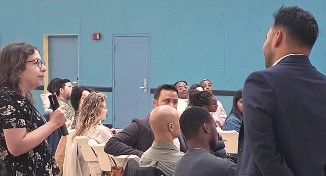
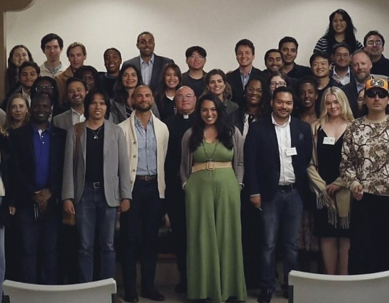
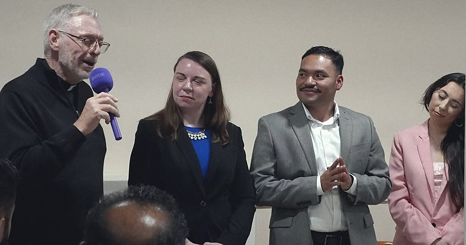
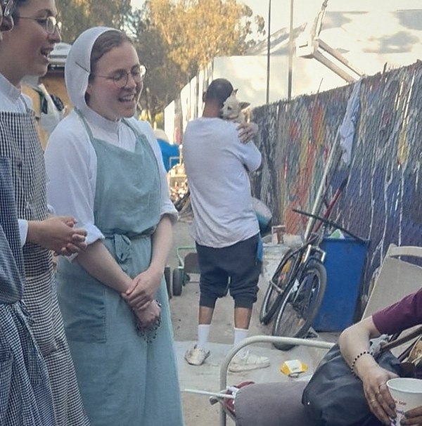
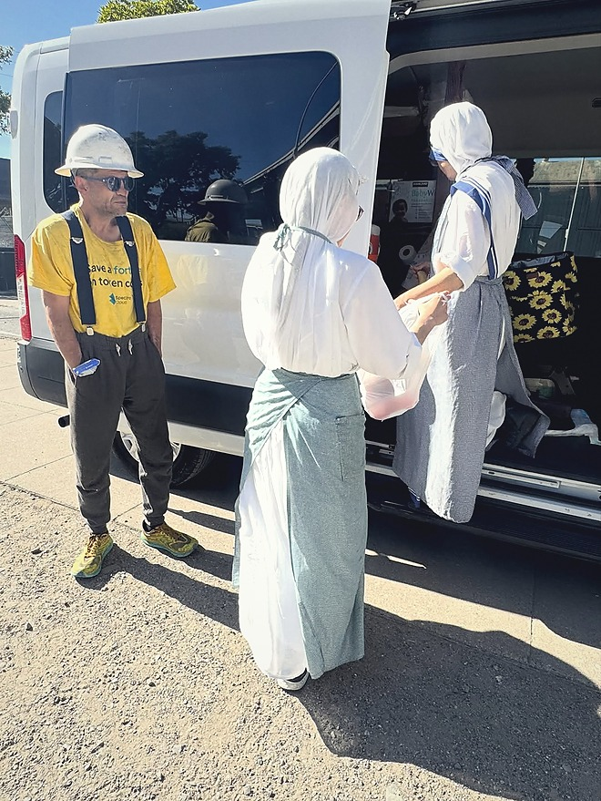
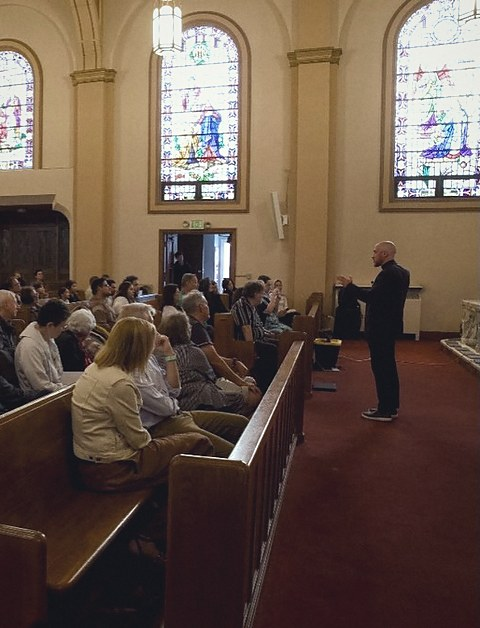
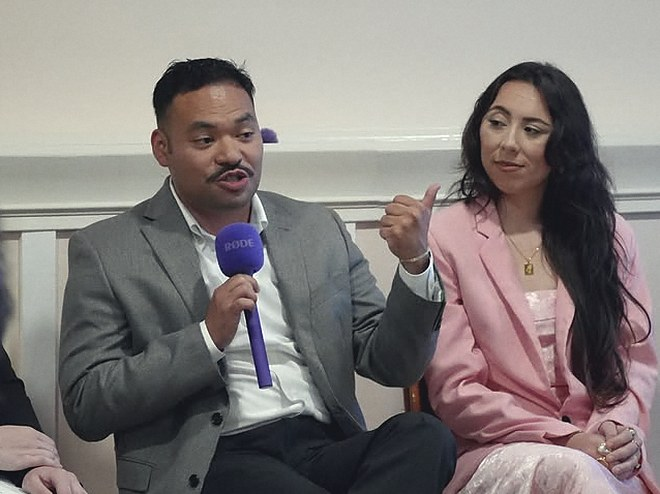
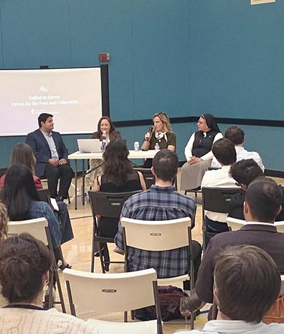
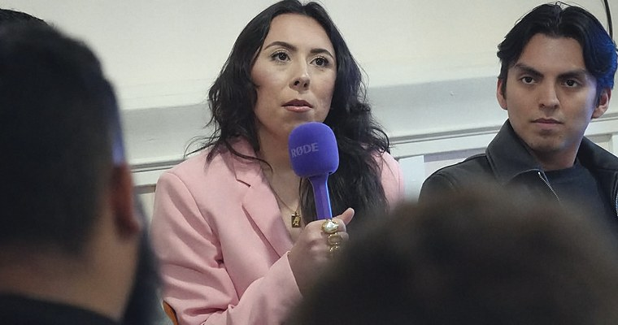

Ages 21–40 · Business casual encouraged. Luma registration required for entry.
Every evening so far
2 June 2026Called to LeadSold out
7 July 2026Rights and ResponsibilitiesSold out
30 July 2026The Shroud of TurinIn Spanish
5 August 2026Called to ServeSold out
The reception7 July 2026St James ParishTwo attendees7 July 2026Dolores Heights

A question5 August 2026St Paul ChurchThe panel5 August 2026St Paul Church

Called to Lead2 June 2026St Philip the Apostle
The record · June to August 2026
Four evenings. Four parishes.
Three lecture nights on Catholic social teaching, each one sold out, and one evening in Spanish at St Monica. The Archdiocese of San Francisco covered two of them: its 4 June 2026 article reports the 2 June evening, its 15 July 2026 article the 7 July one, and both counted about fifty young adults in the room. One outing with the Missionaries of Charity has been run. A second is set for Saturday 29 August 2026, 2:00 to 6:00 PM, and it is sold out.
Sold out
2 June 2026
Called to Lead
A Discussion on Catholic Social Teaching
Tuesday, 7:00 to 9:00 PM. St Philip the Apostle Church Hall, 725 Diamond St, San Francisco.
63 registered.
Speaker
Mr. Ryan Mayer, Director of the Office of Catholic Identity Formation & Assessment, Archdiocese of San Francisco
Panel
Mason Friedberg, Founder of Bay Wide Young Adults
Amytza Maskati, Founder of Sisterhood Surrender and trailblazer at St Raymond’s Young Adults
The room2 June 2026St Philip the Apostle
Sold out
7 July 2026
Rights and Responsibilities
Advancing the Common Good
Tuesday, 6:30 to 9:00 PM. St James Parish Hall, Dolores Heights, San Francisco.
62 registered.
Keynote
Molly C. Sheahan, Associate Director for Healthy Families, California Catholic Conference
Panel
Saul Perez, Social Action & Digital Media Coordinator, Office of Human Life & Dignity, Archdiocese of San Francisco
Melanie Salazar, Executive Director of Pro-Life San Francisco
Franco Aurelio Fernandez, content creator

The panel7 July 2026St James Parish
The one evening held in Spanish
30 July 2026
¿Quién es el hombre de la Sábana Santa?
The Shroud of Turin. The one evening of the four held in Spanish, and the only one in a church rather than a parish hall.
Thursday, 6:30 to 9:00 PM. St Monica Catholic Church, 470 24th Ave, San Francisco.
22 guests. Tickets were $10.
Presented by
Othonia, which brought the full-length replica of the Shroud of Turin and presented it
Co-hosted with
Star of the Sea Young Adults Group
The replica30 July 2026St Monica
Service · Missionaries of Charity
3 August 2026
Serving with the Missionaries of Charity
Volunteers out with the sisters in San Francisco. This work sits outside the lecture series.
The four photographs here are the group’s own, published from the outing on 3 August 2026.
Spoke about it afterwards
Roberto Lacayo shared his experience serving with the Missionaries of Charity in San Francisco
The van door3 August 2026San Francisco

On the street3 August 2026San Francisco

The handover3 August 2026San FranciscoThe shelter3 August 2026San Francisco
Sold out
5 August 2026
Called to Serve
Option for the Poor & Vulnerable
Wednesday, 6:30 to 9:00 PM. St Paul Catholic Church, 221 Valley St, San Francisco.
57 registered.
Keynote
Sr. Marilú Ibarra, FdCC, Spiritual Caregiver, Program Advocate and Community Leader, St. Anthony Foundation
Moderator
Bridget Mahoney, Director of Development, Catholic Charities San Francisco
Panel
Lorna Baggott, Development & Communications Manager, Order of Malta Clinic of Northern California
Miguel Ramirez Lacayo, Case Manager and Housing Specialist, Catholic Charities San Francisco
Questions5 August 2026St Paul Church
What happens if you go
One evening, and who runs it.
The subject changes from month to month, and so do the people at the front of the room. The order of the night does not. The series keeps a chaplain of its own and runs in partnership with the Archdiocese of San Francisco.
The order of the night · three hours
6:30PM
Check-in. Wine and small bites.
7:00PM
The talk starts. A panel discussion follows it, then questions from the floor.
9:00PM
The room turns to networking.
9:30PM
The evening ends.
Before the talk7 July 2026St James Parish

The talk30 July 2026St Monica

The panel7 July 2026St James Parish

From the back5 August 2026St Paul Church
Chaplain
Fr. Tom Martin
Pastor of the Noe Valley Cluster, serving the parishes of St. Paul, St. James, and St. Philip the Apostle in San Francisco, and serves as Chaplain for Catholic Leaders in Action.
Ordained to the priesthood in 2013. Fr. Tom also serves as Catholic Chaplain for the San Francisco Giants and Magistral Chaplain for the Order of Malta.
Every evening held so far has been in one of the three parishes he pastors, apart from the Spanish-language one at St Monica. So is the evening on 1 September.
On the record
Catherine Dombrowski
Attendee at the 7 July 2026 evening. Both quotations below are hers.
“I think we’re in a time where a lot of young adults are on fire for their faith, but there’s a disconnect because many don’t know how to unite or move something forward.”
“I enjoyed meeting new people, learning new things, and connecting with people who are passionate about putting their faith into action.”
Both quotations reported by the Archdiocese of San Francisco.
In its own words
“Catholic Leaders in Action is a collective formed in partnership with the Archdiocese of San Francisco dedicated to connecting and equipping Catholics who desire to lead with conviction, excellence, and faith in everyday life.”
Institutions that have co-sponsored an evening or supplied a speaker
Archdiocese of San Francisco, Office of Human Life & Dignity
California Catholic Conference
Pro-Life San Francisco
Catholic Charities San Francisco
Order of Malta, Clinic of Northern California
St. Anthony Foundation
Bay Wide Young Adults
Sisterhood Surrender
St Raymond’s Young Adults
Dominican School of Philosophy & Theology
Lay Mission Institute
What to do next
Come 1 September, or leave a number.
Registration for the September evening runs through Luma. If that date does not work, leave a mobile number and you get one text when the next evening has a date.
If 1 September works
Hold a place.
Entry is by Luma registration. The listing carries the address, the start time and the two speakers. It is the same listing linked at the top of this page.
One message, sent when the next evening has a date. The number is used for that and nothing else.

A panellist7 July 2026St James ParishThe outing3 August 2026San FranciscoThe sanctuary30 July 2026St MonicaAfter the talk7 July 2026St James Parish
What people ask before they register
These are the answers the event listings give. Where a listing does not say, this page does not say either.
Do I have to be Catholic?
The series describes itself as a collective for Catholics who desire to lead. Nothing published sets out a policy wider than that, so if you are not Catholic and want to come, ask on Instagram before you register.
What does it cost?
The three evenings on Catholic social teaching were free to register on Luma. The Shroud of Turin evening on 30 July was $10. Check the listing for the date you want.
Do I need to register?
Yes. Luma registration is required for entry. Each evening has its own listing, and that is where registration happens.
What should I wear?
Business casual is encouraged. That is the only guidance the event listings give.
How old is this group?
It was founded in June 2026. The first evening was held on 2 June 2026 at St Philip the Apostle Church Hall.
What is the age range?
21 to 40. The inaugural evening was listed as 21 to 39, and every event since has been listed 21 to 40.
Do the events sell out?
Yes. Three lecture evenings in a row sold out. If a date matters to you, register when it is posted rather than in the week before.